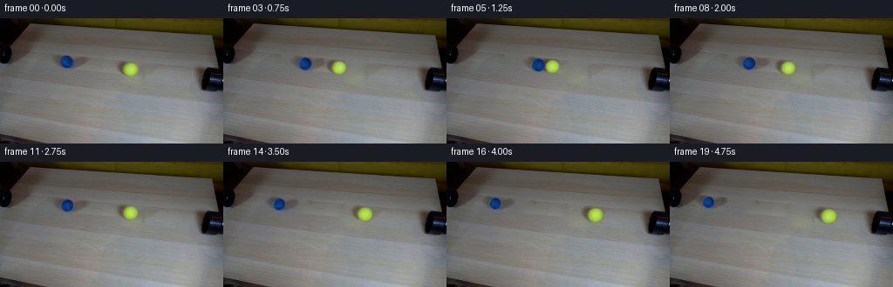
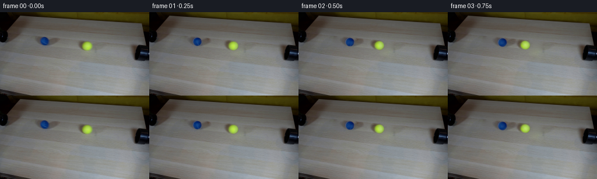
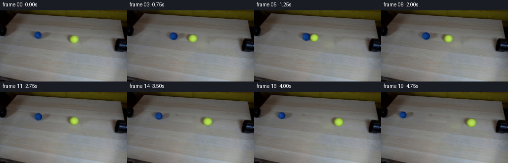
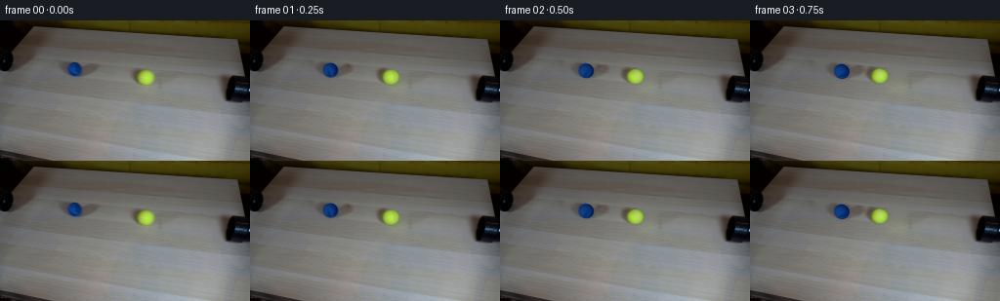

CODING AGENTS AS PIXEL WORLD MODELS
traex/GPT-6.1-Sol · 0033
点击播放 · 原生 RGB 像素
逐轮保存的候选
回放视频、检查图与代码变化。
每份候选均可单独播放。实际图片检查记录在下方工具轨迹中。
候选 01播放与检查图
点击播放 · 原生 RGB 像素


展开代码变化
--- 上一保存版本
+++ 本次保存版本
@@ -0,0 +1,187 @@
+"""A fixed photographic plate with analytically rolling, colliding spheres."""
+from pathlib import Path
+import math
+import numpy as np
+from PIL import Image
+import cv2
+from scipy.ndimage import gaussian_filter, map_coordinates
+from scipy.sparse import lil_matrix
+from scipy.sparse.linalg import factorized
+import artifact_io
+
+ROOT = Path(__file__).resolve().parent
+H,W = 144,256
+Y,X=np.mgrid[:H,:W].astype(float)
+
+
+def harmonic_fill(image,mask):
+ ids=np.full(mask.shape,-1,dtype=int)
+ ys,xs=np.where(mask)
+ ids[ys,xs]=np.arange(len(ys))
+ mat=lil_matrix((len(ys),len(ys)),dtype=float)
+ rhs=np.zeros((len(ys),3))
+ for k,(y,x) in enumerate(zip(ys,xs)):
+ mat[k,k]=4
+ for yy,xx in [(y-1,x),(y+1,x),(y,x-1),(y,x+1)]:
+ if mask[yy,xx]:mat[k,ids[yy,xx]]=-1
+ else:rhs[k]+=image[yy,xx]
+ solve=factorized(mat.tocsc())
+ out=image.copy()
+ for c in range(3):out[ys,xs,c]=solve(rhs[:,c])
+ return out
+
+
+def ellipse(cx,cy,rx,ry):
+ return ((X-cx)/rx)**2+((Y-cy)/ry)**2
+
+
+def basis(nx,ny,nz):
+ return np.stack([np.ones_like(nx),nz,nx,ny,nx*nx,ny*ny,nx*ny],axis=-1)
+
+
+def rotation(axis,theta):
+ axis=np.asarray(axis);axis=axis/np.linalg.norm(axis)
+ x,y,z=axis
+ K=np.array([[0,-z,y],[z,0,-x],[-y,x,0]])
+ return np.eye(3)*math.cos(theta)+(1-math.cos(theta))*np.outer(axis,axis)+math.sin(theta)*K
+
+
+def prepare_plate(src):
+ # These regions are on the original tabletop, safely clear of both pipes.
+ blue=ellipse(76.35,49.95,7.7,7.5)
+ yellow=ellipse(149.7,58.45,9.05,8.45)
+ masks=[]
+ masks.append((ellipse(78.4,49.5,22.4,10.5)<1)|(blue<1.5))
+ masks.append((ellipse(146.7,58.0,17.1,11.2)<1)|(yellow<1.5))
+ total=masks[0]|masks[1]
+ plate=harmonic_fill(src,total)
+ # Fine wooden grain is sampled from the unchanged plate, not invented objects.
+ texture=src-gaussian_filter(src,(1.0,2.0,0))
+ grain=np.zeros_like(src)
+ for m,dy in zip(masks,[23,25]):
+ shifted=np.roll(texture,-dy,axis=0)
+ feather=np.minimum(1,cv2.distanceTransform(m.astype(np.uint8),cv2.DIST_L2,3)/3)
+ grain+=shifted*feather[...,None]*m[...,None]*.65
+ plate+=grain
+ models=[]
+ for i,(cx,cy,rx,ry) in enumerate([(76.35,49.95,7.55,7.35),(149.7,58.45,8.8,8.15)]):
+ d=ellipse(cx,cy,rx,ry)
+ rr=np.sqrt(d)
+ alpha=np.clip((1-rr)*min(rx,ry)/.95+.5,0,1)
+ # Fill only the opaque sphere, retaining the original diffuse tabletop shadow.
+ hole=(d<1.13)
+ shadowed=harmonic_fill(src,hole)
+ sh=np.minimum(shadowed-plate,0)
+ sh=gaussian_filter(sh,(.55,.55,0))*masks[i][...,None]
+ # Remove the tiny source-grain component from the shadow boundary.
+ sh=np.where(sh < -1.0,sh,0)
+ beneath=plate+sh
+ decoded=(src-beneath*(1-alpha[...,None]))/np.maximum(alpha[...,None],.12)
+ nx=(X-cx)/rx;ny=(Y-cy)/ry;nz=np.sqrt(np.maximum(0,1-nx*nx-ny*ny))
+ b=basis(nx,ny,nz)
+ valid=(alpha>.985)&(d<.87)
+ A=b[valid]; C=decoded[valid]
+ coeff=np.linalg.lstsq(A,C,rcond=None)[0]
+ # Downweight the curved, brighter seam while estimating stationary light.
+ for _ in range(4):
+ errors=np.linalg.norm(C-A@coeff,axis=-1)
+ weights=np.minimum(1,5/np.maximum(errors,1))
+ coeff=np.linalg.lstsq(A*weights[:,None],C*weights[:,None],rcond=None)[0]
+ smooth=b@coeff
+ residual=(decoded-smooth)*np.clip((alpha-.45)/.4,0,1)[...,None]
+ residual*=np.clip(nz/.38,0,1)[...,None]
+ residual=gaussian_filter(residual,(.34,.34,0))
+ # Keep a small local field, including the soft, asymmetric source shadow.
+ x0=int(cx)-26;y0=int(cy)-15
+ models.append(dict(cx=cx,cy=cy,rx=rx,ry=ry,coeff=coeff,
+ residual=residual,shadow=sh[y0:y0+32,x0:x0+54],
+ sx=x0-cx,sy=y0-cy))
+ return plate,models
+
+
+def draw_shadow(image,model,cx,cy,scale):
+ sh=model['shadow']
+ sx=(X-cx)/scale-model['sx'];sy=(Y-cy)/scale-model['sy']
+ vals=np.stack([map_coordinates(sh[...,c],[sy,sx],order=1,mode='constant',cval=0) for c in range(3)],-1)
+ image+=vals
+
+
+def render_ball(image,model,cx,cy,scale,theta,oversample=4):
+ rx=model['rx']*scale;ry=model['ry']*scale
+ x0=max(0,int(cx-rx-3));x1=min(W,int(cx+rx+4))
+ y0=max(0,int(cy-ry-3));y1=min(H,int(cy+ry+4))
+ # Subpixel integration of the small sphere; a photographic (not vector) edge.
+ yy,xx=np.mgrid[y0:y1:1/oversample,x0:x1:1/oversample]
+ xx+=.5/oversample-.5;yy+=.5/oversample-.5
+ nx=(xx-cx)/rx;ny=(yy-cy)/ry
+ rr=np.sqrt(nx*nx+ny*ny)
+ alpha=np.clip((1-rr)*min(rx,ry)/.80+.5,0,1)
+ safe=np.maximum(rr,1)
+ nx=nx/safe;ny=ny/safe
+ nz=np.sqrt(np.maximum(0,1-nx*nx-ny*ny))
+ normals=np.stack([nx,ny,nz],-1)
+ axis=np.array([-.17,.635,.755])
+ p=normals@rotation(axis,theta)
+ tx=model['cx']+p[...,0]*model['rx']
+ ty=model['cy']+p[...,1]*model['ry']
+ residual=np.stack([map_coordinates(model['residual'][...,c],[ty,tx],order=1,mode='nearest') for c in range(3)],-1)
+ color=basis(nx,ny,nz)@model['coeff']
+ color+=residual
+ # Weak, tightly spaced fiber detail is attached to the rotating ball surface.
+ fuzz=(np.sin(p[...,0]*183+p[...,1]*91+p[...,2]*143)*np.sin(p[...,0]*87-p[...,1]*161+p[...,2]*65))
+ color+=fuzz[...,None]*np.array([.7,.85,.75])
+ color=np.clip(color,0,255)
+ # Premultiplied supersampling prevents white/dark fringes at the silhouette.
+ ph=y1-y0;pw=x1-x0
+ ap=alpha.reshape(ph,oversample,pw,oversample).mean((1,3))
+ cp=(color*alpha[...,None]).reshape(ph,oversample,pw,oversample,3).mean((1,3))
+ image[y0:y1,x0:x1]=image[y0:y1,x0:x1]*(1-ap[...,None])+cp
+
+
+def generate():
+ src=np.asarray(Image.open(ROOT/'first_frame.png').convert('RGB')).astype(float)
+ plate,models=prepare_plate(src)
+ # Equal masses and equal, opposite incoming velocities. The approach line
+ # follows the two pipe mouths in the fixed oblique camera projection.
+ slope=(models[1]['cy']-models[0]['cy'])/(models[1]['cx']-models[0]['cx'])
+ midpoint=(models[0]['cx']+models[1]['cx'])/2
+ separation=models[1]['cx']-models[0]['cx']
+ rsum=models[0]['rx']+models[1]['rx']
+ contact_sep=rsum/np.sqrt(1+slope*slope)
+ hit=1.25
+ incoming=(separation-contact_sep)/(2*hit)
+ restitution=.87;decel=1.4
+ frames=[src.astype(np.uint8)]
+ for index in range(1,20):
+ t=index/4
+ if t<=hit:
+ travel=incoming*t
+ spintravel=travel
+ else:
+ u=t-hit
+ rebound=restitution*incoming*u-.5*decel*u*u
+ travel=incoming*hit-rebound
+ # The initial spin survives impact briefly, then the balls resume
+ # rolling without slip as friction acts at their tabletop contacts.
+ spintravel=travel+2*incoming*.14*(1-np.exp(-u/.14))
+ image=plate.copy()
+ states=[]
+ for j,m in enumerate(models):
+ sign=1 if j==0 else -1
+ cx=m['cx']+sign*travel
+ cy=m['cy']+sign*travel*slope
+ # Mild depth-dependent magnification in the photographic plate.
+ target_r=models[0]['rx']+(cx-models[0]['cx'])*(models[1]['rx']-models[0]['rx'])/separation
+ scale=target_r/m['rx']
+ theta=sign*spintravel/(m['rx']*.99)
+ states.append((m,cx,cy,scale,theta))
+ for m,cx,cy,scale,theta in states:draw_shadow(image,m,cx,cy,scale)
+ for m,cx,cy,scale,theta in states:render_ball(image,m,cx,cy,scale,theta)
+ frames.append(np.clip(np.rint(image),0,255).astype(np.uint8))
+ frames=np.stack(frames)
+ artifact_io.save(frames,ROOT)
+ (ROOT/'.tmp').mkdir(exist_ok=True)
+ Image.fromarray(np.clip(plate,0,255).astype(np.uint8)).save(ROOT/'.tmp'/'clean_plate.png')
+ print('Saved',frames.shape,frames.dtype,'first frame exact:',np.array_equal(frames[0],src.astype(np.uint8)))
+
+if __name__=='__main__':generate()
候选 02播放与检查图
点击播放 · 原生 RGB 像素
展开代码变化
--- 上一保存版本
+++ 本次保存版本
@@ -36,7 +36,7 @@
def basis(nx,ny,nz):
- return np.stack([np.ones_like(nx),nz,nx,ny,nx*nx,ny*ny,nx*ny],axis=-1)
+ return np.stack([np.ones_like(nx),nz,nx,ny],axis=-1)
def rotation(axis,theta):
@@ -79,13 +79,13 @@
decoded=(src-beneath*(1-alpha[...,None]))/np.maximum(alpha[...,None],.12)
nx=(X-cx)/rx;ny=(Y-cy)/ry;nz=np.sqrt(np.maximum(0,1-nx*nx-ny*ny))
b=basis(nx,ny,nz)
- valid=(alpha>.985)&(d<.87)
+ valid=(alpha>.985)&(d<.66)
A=b[valid]; C=decoded[valid]
coeff=np.linalg.lstsq(A,C,rcond=None)[0]
# Downweight the curved, brighter seam while estimating stationary light.
- for _ in range(4):
+ for _ in range(6):
errors=np.linalg.norm(C-A@coeff,axis=-1)
- weights=np.minimum(1,5/np.maximum(errors,1))
+ weights=np.minimum(1,3/np.maximum(errors,1))
coeff=np.linalg.lstsq(A*weights[:,None],C*weights[:,None],rcond=None)[0]
smooth=b@coeff
residual=(decoded-smooth)*np.clip((alpha-.45)/.4,0,1)[...,None]
候选 03播放与检查图
候选 04播放与检查图
点击播放 · 原生 RGB 像素


展开代码变化
--- 上一保存版本
+++ 本次保存版本
@@ -88,8 +88,8 @@
weights=np.minimum(1,3/np.maximum(errors,1))
coeff=np.linalg.lstsq(A*weights[:,None],C*weights[:,None],rcond=None)[0]
smooth=b@coeff
- residual=(decoded-smooth)*np.clip((alpha-.45)/.4,0,1)[...,None]
- residual*=np.clip(nz/.38,0,1)[...,None]
+ residual=(decoded-smooth)*np.clip((alpha-.92)/.07,0,1)[...,None]
+ residual*=np.clip((.88-d)/.24,0,1)[...,None]
residual=gaussian_filter(residual,(.34,.34,0))
# Keep a small local field, including the soft, asymmetric source shadow.
x0=int(cx)-26;y0=int(cy)-15
可观测工具轨迹
实际执行的命令与返回图片。
命令 1exit 0
/bin/bash -lc 'ls -la && cat prompt.txt && cat GENERATION_RULES.md'
命令 2exit 0
/bin/bash -lc "cat artifact_io.py && python - <<'PY'
from PIL import Image
import numpy as np
im=np.array(Image.open('first_frame.png'))
print(im.shape)
for y in range(0,144,4):
s=''
for x in range(0,256,4):
r,g,b=im[y:y+4,x:x+4,:3].mean((0,1))
if b>r*1.3 and b>g*1.15:s+='B'
elif r>110 and g>95 and b<g*.7:s+='Y'
elif min(r,g,b)>210:s+='.'
elif min(r,g,b)>150:s+='-'
elif min(r,g,b)>80:s+='o'
elif min(r,g,b)>40:s+='x'
else:s+='#'
print(f'{y:3d} '+s)
PY"命令 3exit 0
/bin/bash -lc "python - <<'PY'
import numpy as np
from PIL import Image
from scipy.ndimage import label
im=np.array(Image.open('first_frame.png'))
r,g,b=im.astype(float).transpose(2,0,1)
for name,m in [('blue',(b>r*1.35)&(b>g*1.2)&(b>60)),('yellow',(r>g*.88)&(g>b*1.55)&(r>100))]:
l,n=label(m)
print(name)
for i in range(1,n+1):
y,x=np.where(l==i)
if len(x)>4: print(len(x),'bounds',x.min(),y.min(),x.max(),y.max(),'center',x.mean(),y.mean(),'rgb',im[y,x].mean(0))
# print RGB at grid
print('grid rgb')
for y in range(30,82,4):
print(y,[(x,im[y,x].tolist()) for x in range(0,256,8)])
PY"命令 4exit 0
/bin/bash -lc "python - <<'PY'
from PIL import Image
import numpy as np
from scipy.ndimage import label
im=np.array(Image.open('first_frame.png')).astype(float); r,g,b=im.transpose(2,0,1)
m=(g>r*1.10)&(g>b*1.32)&(g>100)
l,n=label(m)
for i in range(1,n+1):
y,x=np.where(l==i)
if len(x)>10:print(len(x),x.min(),y.min(),x.max(),y.max(),x.mean(),y.mean())
for bounds in [(54,103,35,64),(128,168,43,76)]:
x0,x1,y0,y1=bounds
print('REGION',bounds)
for y in range(y0,y1):
s=''
for x in range(x0,x1):
rr,gg,bb=im[y,x]
if bb>rr*1.3 and bb>gg*1.16:s+='B'
elif gg>rr*1.1 and gg>bb*1.3:s+='Y'
else:s+='0123456789abcdef'[min(15,int(im[y,x].mean())//10)]
print(y,s)
PY"命令 5exit 1
/bin/bash -lc "python - <<'PY'
import numpy as np
from PIL import Image
im=np.array(Image.open('first_frame.png'))
for y in range(40,61):
print('blue',y,' '.join('%02d'%np.mean(im[y,x]) for x in range( sixty:=60,101,2)))
print('sphere samples')
for p in [(76,43),(71,46),(80,46),(76,50),(72,53),(80,53),(77,56),(150,51),(145,55),(154,55),(145,59),(150,59),(154,61),(149,65)]:print(p,im[p[1],p[0]])
import cv2
print('cv2',cv2.__version__)
PY"命令 6exit 0
/bin/bash -lc "python - <<'PY'
import numpy as np
from PIL import Image
im=np.array(Image.open('first_frame.png'))
for y in range(40,61):
print('blue',y,' '.join('%03d'%np.mean(im[y,x]) for x in range(60,103,2)))
print('sphere samples')
for p in [(76,43),(71,46),(80,46),(76,50),(72,53),(80,53),(77,56),(150,51),(145,55),(154,55),(145,59),(150,59),(154,61),(149,65)]:print(p,im[p[1],p[0]])
import cv2
print('cv2',cv2.__version__)
PY"命令 7exit 0
/bin/bash -lc "python - <<'PY'
import numpy as np
from PIL import Image
im=np.array(Image.open('first_frame.png')).astype(float)
for name,x0,x1,y0,y1 in [('blue',68,85,42,59),('yellow',140,160,50,68)]:
print(name,'R/G/B for all ball rows')
for y in range(y0,y1):
vals=[]
for x in range(x0,x1):
r,g,b=im[y,x]
if name=='blue':
c='W' if (b>65 and r>40 and g>60 and b/r<2.3) else ('+' if b>120 else ('b' if b>r*1.35 and b>g*1.2 else '.'))
else:
c='W' if (r>130 and g>130 and b>95) else ('+' if g>215 else ('y' if g>r*1.1 and g>b*1.32 else '.'))
vals.append(c)
print(y,''.join(vals))
PY"命令 8exit 0
/bin/bash -lc "python - <<'PY'
import numpy as np
from PIL import Image
im=np.array(Image.open('first_frame.png')).astype(float)
L=im.mean(2)
for y in range(34,73,2):
print('%2d'%y, ' '.join('%3d'%L[y,x] for x in range(54,211,3)))
PY"命令 9exit 0
/bin/bash -lc "python - <<'PY'
from PIL import Image
import numpy as np
im=np.array(Image.open('first_frame.png'))
for name,x0,x1,y0,y1 in [('blue',69,84,43,58),('yellow',141,159,51,67)]:
for ci,c in enumerate('RGB'):
print(name,c)
for y in range(y0,y1):print(y,' '.join('%3d'%z for z in im[y,x0:x1,ci]))
PY"命令 10exit 0
/bin/bash -lc "cat > generate.py <<'PY'
\"\"\"A fixed photographic plate with analytically rolling, colliding spheres.\"\"\"
from pathlib import Path
import math
import numpy as np
from PIL import Image
import cv2
from scipy.ndimage import gaussian_filter, map_coordinates
from scipy.sparse import lil_matrix
from scipy.sparse.linalg import factorized
import artifact_io
ROOT = Path(__file__).resolve().parent
H,W = 144,256
Y,X=np.mgrid[:H,:W].astype(float)
def harmonic_fill(image,mask):
ids=np.full(mask.shape,-1,dtype=int)
ys,xs=np.where(mask)
ids[ys,xs]=np.arange(len(ys))
mat=lil_matrix((len(ys),len(ys)),dtype=float)
rhs=np.zeros((len(ys),3))
for k,(y,x) in enumerate(zip(ys,xs)):
mat[k,k]=4
for yy,xx in [(y-1,x),(y+1,x),(y,x-1),(y,x+1)]:
if mask[yy,xx]:mat[k,ids[yy,xx]]=-1
else:rhs[k]+=image[yy,xx]
solve=factorized(mat.tocsc())
out=image.copy()
for c in range(3):out[ys,xs,c]=solve(rhs[:,c])
return out
def ellipse(cx,cy,rx,ry):
return ((X-cx)/rx)**2+((Y-cy)/ry)**2
def basis(nx,ny,nz):
return np.stack([np.ones_like(nx),nz,nx,ny,nx*nx,ny*ny,nx*ny],axis=-1)
def rotation(axis,theta):
axis=np.asarray(axis);axis=axis/np.linalg.norm(axis)
x,y,z=axis
K=np.array([[0,-z,y],[z,0,-x],[-y,x,0]])
return np.eye(3)*math.cos(theta)+(1-math.cos(theta))*np.outer(axis,axis)+math.sin(theta)*K
def prepare_plate(src):
# These regions are on the original tabletop, safely clear of both pipes.
blue=ellipse(76.35,49.95,7.7,7.5)
yellow=ellipse(149.7,58.45,9.05,8.45)
masks=[]
masks.append((ellipse(78.4,49.5,22.4,10.5)<1)|(blue<1.5))
masks.append((ellipse(146.7,58.0,17.1,11.2)<1)|(yellow<1.5))
total=masks[0]|masks[1]
plate=harmonic_fill(src,total)
# Fine wooden grain is sampled from the unchanged plate, not invented objects.
texture=src-gaussian_filter(src,(1.0,2.0,0))
grain=np.zeros_like(src)
for m,dy in zip(masks,[23,25]):
shifted=np.roll(texture,-dy,axis=0)
feather=np.minimum(1,cv2.distanceTransform(m.astype(np.uint8),cv2.DIST_L2,3)/3)
grain+=shifted*feather[...,None]*m[...,None]*.65
plate+=grain
models=[]
for i,(cx,cy,rx,ry) in enumerate([(76.35,49.95,7.55,7.35),(149.7,58.45,8.8,8.15)]):
d=ellipse(cx,cy,rx,ry)
rr=np.sqrt(d)
alpha=np.clip((1-rr)*min(rx,ry)/.95+.5,0,1)
# Fill only the opaque sphere, retaining the original diffuse tabletop shadow.
hole=(d<1.13)
shadowed=harmonic_fill(src,hole)
sh=np.minimum(shadowed-plate,0)
sh=gaussian_filter(sh,(.55,.55,0))*masks[i][...,None]
# Remove the tiny source-grain component from the shadow boundary.
sh=np.where(sh < -1.0,sh,0)
beneath=plate+sh
decoded=(src-beneath*(1-alpha[...,None]))/np.maximum(alpha[...,None],.12)
nx=(X-cx)/rx;ny=(Y-cy)/ry;nz=np.sqrt(np.maximum(0,1-nx*nx-ny*ny))
b=basis(nx,ny,nz)
valid=(alpha>.985)&(d<.87)
A=b[valid]; C=decoded[valid]
coeff=np.linalg.lstsq(A,C,rcond=None)[0]
# Downweight the curved, brighter seam while estimating stationary light.
for _ in range(4):
errors=np.linalg.norm(C-A@coeff,axis=-1)
weights=np.minimum(1,5/np.maximum(errors,1))
coeff=np.linalg.lstsq(A*weights[:,None],C*weights[:,None],rcond=None)[0]
smooth=b@coeff
residual=(decoded-smooth)*np.clip((alpha-.45)/.4,0,1)[...,None]
residual*=np.clip(nz/.38,0,1)[...,None]
residual=gaussian_filter(residual,(.34,.34,0))
# Keep a small local field, including the soft, asymmetric source shadow.
x0=int(cx)-26;y0=int(cy)-15
models.append(dict(cx=cx,cy=cy,rx=rx,ry=ry,coeff=coeff,
residual=residual,shadow=sh[y0:y0+32,x0:x0+54],
sx=x0-cx,sy=y0-cy))
return plate,models
def draw_shadow(image,model,cx,cy,scale):
sh=model['shadow']
sx=(X-cx)/scale-model['sx'];sy=(Y-cy)/scale-model['sy']
vals=np.stack([map_coordinates(sh[...,c],[sy,sx],order=1,mode='constant',cval=0) for c in range(3)],-1)
image+=vals
def render_ball(image,model,cx,cy,scale,theta,oversample=4):
rx=model['rx']*scale;ry=model['ry']*scale
x0=max(0,int(cx-rx-3));x1=min(W,int(cx+rx+4))
y0=max(0,int(cy-ry-3));y1=min(H,int(cy+ry+4))
# Subpixel integration of the small sphere; a photographic (not vector) edge.
yy,xx=np.mgrid[y0:y1:1/oversample,x0:x1:1/oversample]
xx+=.5/oversample-.5;yy+=.5/oversample-.5
nx=(xx-cx)/rx;ny=(yy-cy)/ry
rr=np.sqrt(nx*nx+ny*ny)
alpha=np.clip((1-rr)*min(rx,ry)/.80+.5,0,1)
safe=np.maximum(rr,1)
nx=nx/safe;ny=ny/safe
nz=np.sqrt(np.maximum(0,1-nx*nx-ny*ny))
normals=np.stack([nx,ny,nz],-1)
axis=np.array([-.17,.635,.755])
p=normals@rotation(axis,theta)
tx=model['cx']+p[...,0]*model['rx']
ty=model['cy']+p[...,1]*model['ry']
residual=np.stack([map_coordinates(model['residual'][...,c],[ty,tx],order=1,mode='nearest') for c in range(3)],-1)
color=basis(nx,ny,nz)@model['coeff']
color+=residual
# Weak, tightly spaced fiber detail is attached to the rotating ball surface.
fuzz=(np.sin(p[...,0]*183+p[...,1]*91+p[...,2]*143)*np.sin(p[...,0]*87-p[...,1]*161+p[...,2]*65))
color+=fuzz[...,None]*np.array([.7,.85,.75])
color=np.clip(color,0,255)
# Premultiplied supersampling prevents white/dark fringes at the silhouette.
ph=y1-y0;pw=x1-x0
ap=alpha.reshape(ph,oversample,pw,oversample).mean((1,3))
cp=(color*alpha[...,None]).reshape(ph,oversample,pw,oversample,3).mean((1,3))
image[y0:y1,x0:x1]=image[y0:y1,x0:x1]*(1-ap[...,None])+cp
def generate():
src=np.asarray(Image.open(ROOT/'first_frame.png').convert('RGB')).astype(float)
plate,models=prepare_plate(src)
# Equal masses and equal, opposite incoming velocities. The approach line
# follows the two pipe mouths in the fixed oblique camera projection.
slope=(models[1]['cy']-models[0]['cy'])/(models[1]['cx']-models[0]['cx'])
midpoint=(models[0]['cx']+models[1]['cx'])/2
separation=models[1]['cx']-models[0]['cx']
rsum=models[0]['rx']+models[1]['rx']
contact_sep=rsum/np.sqrt(1+slope*slope)
hit=1.25
incoming=(separation-contact_sep)/(2*hit)
restitution=.87;decel=1.4
frames=[src.astype(np.uint8)]
for index in range(1,20):
t=index/4
if t<=hit:
travel=incoming*t
spintravel=travel
else:
u=t-hit
rebound=restitution*incoming*u-.5*decel*u*u
travel=incoming*hit-rebound
# The initial spin survives impact briefly, then the balls resume
# rolling without slip as friction acts at their tabletop contacts.
spintravel=travel+2*incoming*.14*(1-np.exp(-u/.14))
image=plate.copy()
states=[]
for j,m in enumerate(models):
sign=1 if j==0 else -1
cx=m['cx']+sign*travel
cy=m['cy']+sign*travel*slope
# Mild depth-dependent magnification in the photographic plate.
target_r=models[0]['rx']+(cx-models[0]['cx'])*(models[1]['rx']-models[0]['rx'])/separation
scale=target_r/m['rx']
theta=sign*spintravel/(m['rx']*.99)
states.append((m,cx,cy,scale,theta))
for m,cx,cy,scale,theta in states:draw_shadow(image,m,cx,cy,scale)
for m,cx,cy,scale,theta in states:render_ball(image,m,cx,cy,scale,theta)
frames.append(np.clip(np.rint(image),0,255).astype(np.uint8))
frames=np.stack(frames)
artifact_io.save(frames,ROOT)
(ROOT/'.tmp').mkdir(exist_ok=True)
Image.fromarray(np.clip(plate,0,255).astype(np.uint8)).save(ROOT/'.tmp'/'clean_plate.png')
print('Saved',frames.shape,frames.dtype,'first frame exact:',np.array_equal(frames[0],src.astype(np.uint8)))
if __name__=='__main__':generate()
PY
python generate.py"命令 11exit 0
/bin/bash -lc "python - <<'PY'
import generate as g
import numpy as np
from PIL import Image
s=np.array(Image.open('first_frame.png')).astype(float)
p,ms=g.prepare_plate(s)
for m in ms:
print('model',m['cx'],m['cy'],'coeff',np.round(m['coeff'],2))
print('res range',m['residual'].min((0,1)),m['residual'].max((0,1)))
print('shadow min',m['shadow'].min((0,1)))
for k in [0,1,4,5,6,10,19]:
im=np.array(Image.open('frames/%02d.png'%k)).astype(float)
r,gg,b=im.transpose(2,0,1)
for name,mask in [('B',(b>r*1.35)&(b>gg*1.2)&(g.X>20)&(g.X<200)),('Y',(gg>r*1.1)&(gg>b*1.3)&(g.X>30)&(g.X<200))]:
y,x=np.where(mask)
print(k,name,len(x),(x.min(),y.min(),x.max(),y.max()),'center',np.round([x.mean(),y.mean()],2),'rgb',np.round(im[mask].mean(0),1))
print('background MAE',np.abs(im-s)[np.logical_and(g.ellipse(76.35,49.95,25,12)>1,g.ellipse(149.7,58.45,21,13)>1)].mean())
PY"命令 12exit 0
/bin/bash -lc "python - <<'PY'
import generate as g
import numpy as np
from PIL import Image
s=np.array(Image.open('first_frame.png')).astype(float)
p,ms=g.prepare_plate(s)
for m in ms:
cx,cy,rx,ry=[m[k] for k in ['cx','cy','rx','ry']]
nx=(g.X-cx)/rx;ny=(g.Y-cy)/ry;d=nx**2+ny**2;nz=np.sqrt(np.maximum(0,1-d))
for cutoff in [.55,.68,.78]:
valid=d<cutoff
A=np.stack([np.ones_like(nx),nz,nx,ny],-1)[valid];C=s[valid]
co=np.linalg.lstsq(A,C,rcond=None)[0]
for _ in range(6):
e=np.linalg.norm(C-A@co,axis=-1);w=np.minimum(1,3/np.maximum(e,1))
co=np.linalg.lstsq(A*w[:,None],C*w[:,None],rcond=None)[0]
print(cx,cutoff,np.round(co,1))
PY"命令 13exit 0
/bin/bash -lc "python generate.py && python - <<'PY'
import generate as g
from PIL import Image
import numpy as np
src=np.array(Image.open('first_frame.png')).astype(float)
p,ms=g.prepare_plate(src)
a=p.copy()
for m in ms:g.draw_shadow(a,m,m['cx'],m['cy'],1)
for m in ms:g.render_ball(a,m,m['cx'],m['cy'],1,0)
Image.fromarray(np.clip(a,0,255).astype(np.uint8)).save('.tmp/reconstruction.png')
for m in ms:
d=g.ellipse(m['cx'],m['cy'],m['rx'],m['ry'])
print('sphere reconstruction',m['cx'],'MAE',np.abs(a-src)[d<.8].mean(), 'edge error',np.abs(a-src)[(d>.8)&(d<1.2)].mean())
print('coeff',m['coeff'])
for k in [0,1,4,5,6,10,19]:
im=np.array(Image.open('frames/%02d.png'%k)).astype(float)
r,gg,b=im.transpose(2,0,1)
for name,mask in [('B',(b>r*1.35)&(b>gg*1.2)&(g.X>20)&(g.X<200)),('Y',(gg>r*1.1)&(gg>b*1.3)&(g.X>30)&(g.X<200))]:
y,x=np.where(mask)
print(k,name,len(x),'center',np.round([x.mean(),y.mean()],2),'rgb',np.round(im[mask].mean(0),1))
PY"命令 14exit 0
/bin/bash -lc "python generate.py && python - <<'PY'
from PIL import Image
import numpy as np
import generate as g
s=np.array(Image.open('first_frame.png')).astype(float)
p,ms=g.prepare_plate(s)
for m in ms:print(m['cx'],'texture min/max',np.round(m['residual'].min((0,1)),1),np.round(m['residual'].max((0,1)),1))
for k in [0,1,5,10,19]:
a=np.array(Image.open('frames/%02d.png'%k)).astype(float)
r,gg,b=a.transpose(2,0,1)
for name,mask in [('blue',(b>r*1.35)&(b>gg*1.2)&(g.X>20)&(g.X<200)),('yellow',(gg>r*1.1)&(gg>b*1.3)&(g.X>30)&(g.X<200))]:print(k,name,np.round(a[mask].mean(0),1))
# Main table region of the reconstructed stationary plate, expressed numerically.
print('cleaned plate at old ball centers',p[50,76],p[58,150])
print('saved size:')
PY
ls -lh pixels.npz index.html generate.py"保存候选 4 份；完成命令 14 次；可验证图片返回 0 张。原始 API 响应与完整日志保留在本地。